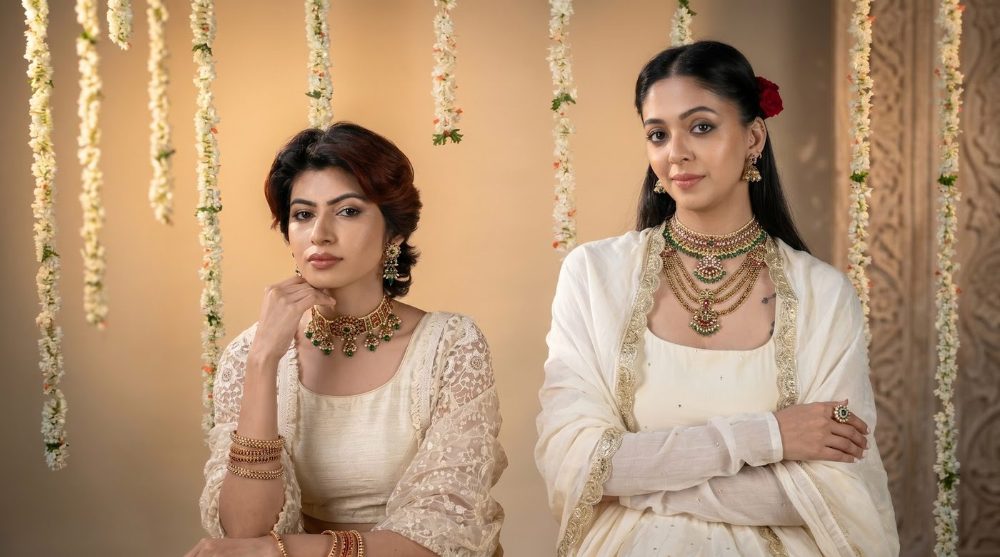
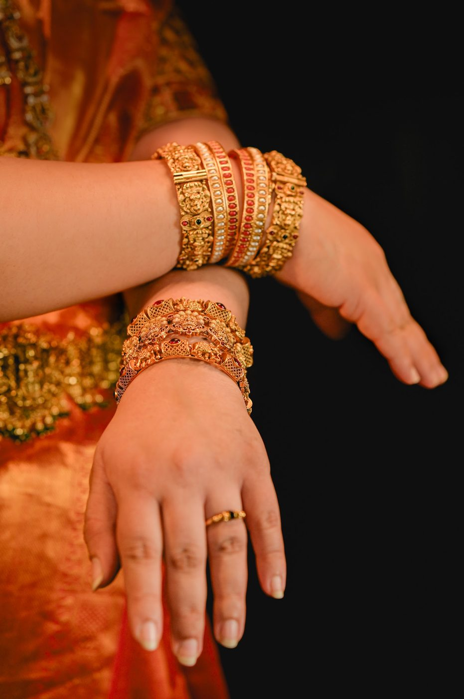
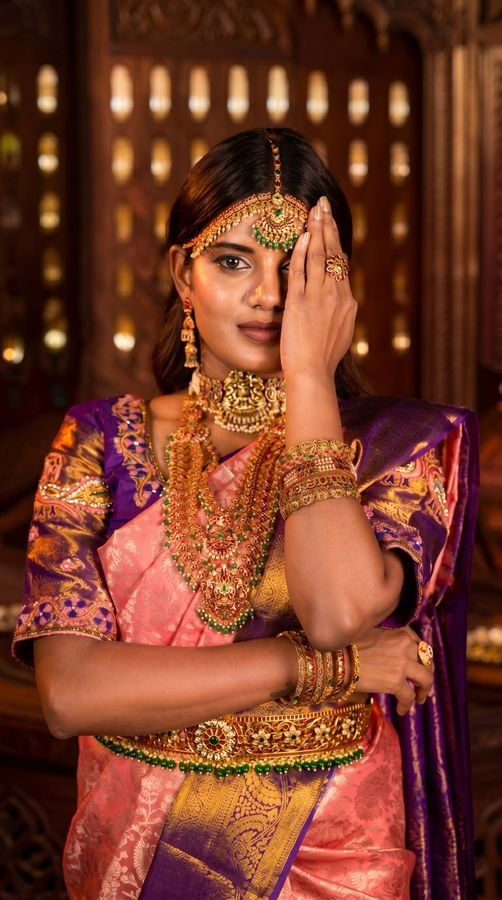
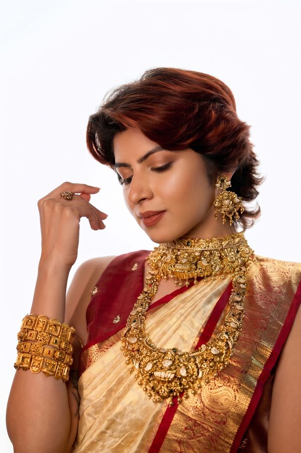
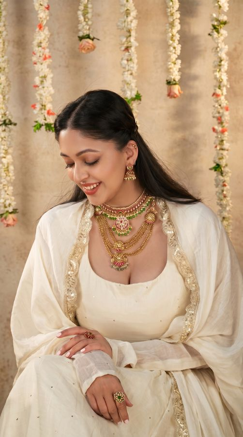

Before it adorned a bride, it adorned a goddess. A reading of the motifs that have travelled, unbroken, from the sanctum to the skin.
To wear temple jewellery is to wear a sentence in a language older than the one you speak. Long before these pieces found their way to the necks and ears of brides, they belonged to stone. In the great temple towns of the South — Thanjavur, Madurai, Nagercoil — goldsmiths worked first for the deity, casting ornaments to be draped over the granite shoulders of Lakshmi and Meenakshi during festival nights. The jewellery you fasten today is the descendant of that devotion: the same vocabulary, simply transcribed onto living skin.
What we now call temple jewellery began, in the most literal sense, in the temple. The form crystallised around the great Chola and Nayaka commissions, when craftsmen gilded the processional bronzes and the utsava murtis carried through the streets. Over generations the idiom loosened its hold on the sanctum and entered the courts, then the wedding mandap, then the dancer's stage — but it never shed its first meaning. Each motif remained what it had always been: a small, portable prayer.
At the heart of the tradition stands Lakshmi — seated on her lotus, flanked by elephants, palms open in the gesture that grants. She is the most frequently struck figure in the entire repertoire, and her presence is never decorative. To set Lakshmi at the centre of a haaram is to ask, plainly, for abundance, for fertility, for a household that does not go hungry. The bride who wears her does not merely look adorned; she is positioned, deliberately, as a vessel of the very prosperity the goddess embodies. The ornament is a blessing worn close enough to the heart to be meant.
Around the goddess gather the other guardians of the form: the makara, the swan, the coiled serpent at the clasp. None of them are filler. Each was chosen because it carried weight — protection, purity, the binding of a vow — and a piece was considered complete only when its symbols agreed with one another, the way the figures in a temple frieze do.
A motif in temple jewellery is never an ornament first. It was a prayer first, and learned to be beautiful only afterwards.

If the goddess is the tradition's verb, the peacock and the mango are its most beloved nouns. The peacock — mayil — arrives associated with Murugan and with the monsoon, that turning of the season when the dry land drinks and everything quickens. A peacock at the hinge of an earring is a wish for rain, for renewal, for love that returns the way the rains do. Its plumage gave goldsmiths their finest excuse for granulation: hundreds of tiny gold beads soldered into a fan, catching lamplight as the wearer turns her head.
The mango — the mangai, the paisley, the curling teardrop that has wandered into half the textiles of the world — is, at root, a symbol of fertility and plenty. Strung in a row down a long haaram, the mangai becomes the literal fruit of the marriage being blessed: abundance multiplied, link by link. That so universal a shape should have begun here, in the orchards and temples of the Tamil country, is one of the quiet facts the jewellery keeps for those who care to ask.
And then there is the colour. Temple jewellery is unthinkable without the deep, uncut red of kemp stones — flat-set, foiled-back glass and natural stones whose warmth is closer to the flame of a temple lamp than to the cold glitter of a faceted gem. Kemp was never meant to dazzle. It was meant to glow, the way ghee-light glows on gilded bronze. Set against high-purity gold, it gives the work its unmistakable temperature: sacred rather than showy, lit from within rather than reflecting outward.
This is the whole grammar in a single stone. Where modern luxury asks a gem to perform, the temple tradition asks it to mean. The kemp is red because red is auspicious, because red is the colour of the goddess, because red is the colour of the lamp that has been kept burning since before anyone can remember.
At AHANKARAKA we treat these motifs not as nostalgia but as a living language — one we are obliged to speak correctly. Our artisans, many of them inheritors of family workshops in the temple towns themselves, still raise the goddess by hand, still lay the granulation bead by bead, still foil and seat each kemp the old way. We resist the temptation to simplify a motif into a logo. A peacock on an AHANKARAKA piece is a peacock that still means rain; a mango still means plenty. The pieces are made to be conscious luxury in the truest sense — slow, intentional, and faithful to the meaning they carry.
To buy such a piece is to take custody of a sentence and agree to keep it legible for whoever wears it next. That is the quiet contract of temple jewellery: it was a blessing before it was an heirloom, and an heirloom only because the blessing was worth passing on.

From wax sketch to the final kemp, inside a temple-town workshop where a single necklace can take months.

How to store, clean and pass on jewellery that is meant to outlive the hands it was made for.

Why a wedding adorns the body head to toe — and what each ornament is quietly asking for.